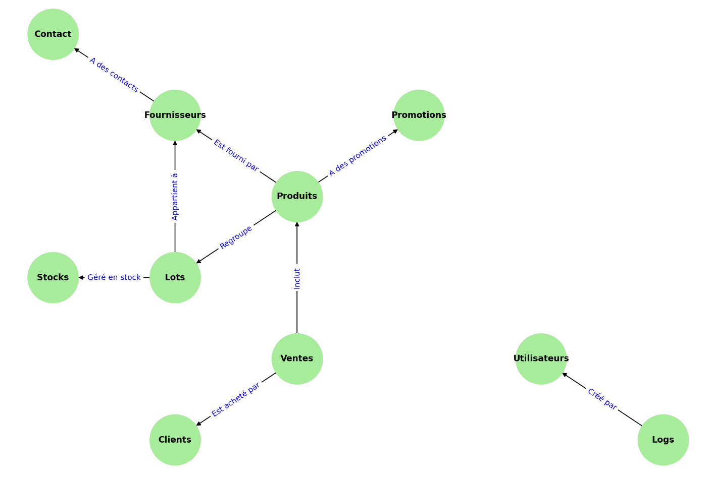

Cahier des Charges pour le Projet "Ma Supérette sur le Net"
Projet par: MEFTAH Zineb, MEDJBER Syphax
G2 L2 Informatique
Table des Matières
- Introduction
- Description du Projet
- Spécifications Fonctionnelles
- Spécifications Techniques
- Scénarios d'Utilisation
- Points Forts de la Modélisation dans le Contexte Terminal
- Architecture du Système Basée sur la Modélisation
- Conformité Légale et Réglementaire
- Gestion de Projet et Planification
- Assurance Qualité
- Maintenance et Support
- Critères d'Acceptation
- Annexes
- Conclusion
Introduction
1.1 Présentation du Projet
- Objectif : Proposer l’informatisation complète d’une supérette via une application en ligne de commande (terminal), optimisant la gestion des fournisseurs, des achats, des stocks, des clients et des ventes.
- Vision et Mission : Améliorer l’efficacité opérationnelle et la compétitivité de la supérette en automatisant les processus clés, tout en offrant une meilleure expérience utilisateur grâce à une gestion optimisée des stocks et des ventes via une interface terminal conviviale.
1.2 Objectif du Document
Ce cahier des charges détaille les spécifications fonctionnelles, techniques, légales et organisationnelles pour le développement du projet "Ma Supérette sur le Net". Il servira de référence pour toutes les parties prenantes tout au long du cycle de vie du projet.
1.3 Parties Prenantes
- Client : Gérant de la supérette.
- Équipe de Développement : Étudiants en charge du projet.
- Utilisateurs Finaux : Personnel de la supérette (gérant, caissiers, gestionnaires de stock).
- Fournisseurs : Entreprises fournissant les produits à la supérette.
Description du Projet
2.1 Contexte et Enjeux
La supérette souhaite moderniser sa gestion interne en informatisant ses processus pour gagner en efficacité, réduire les erreurs humaines et optimiser la gestion des stocks et des ventes. L'application sera exécutée via le terminal, offrant une interface en ligne de commande adaptée aux besoins du personnel.
2.2 Objectifs Spécifiques
- Gestion centralisée des fournisseurs : Faciliter l’ajout, la modification et la suppression des fournisseurs, ainsi que l’accès à leurs informations détaillées.
- Suivi précis des achats et des stocks : Gérer les lots de produits, les quantités, les dates d’achat et de péremption.
- Optimisation des ventes : Enregistrer les ventes détaillées pour analyser les performances et les tendances.
- Tableaux de bord intuitifs : Offrir au gérant des outils d’analyse pour les ventes, les bénéfices, les commandes et la gestion des stocks via le terminal.
ER Diagram - Ma Supérette

Spécifications Fonctionnelles
3.1 Gestion des Fournisseurs
- Fonctionnalités :
- CRUD Fournisseurs : Ajouter, modifier, supprimer et consulter les fournisseurs.
- Informations détaillées :
- Entreprise : Nom de la société, numéro SIRET, adresse, e-mail principal.
- Contacts associés : Un fournisseur peut avoir plusieurs contacts, chacun avec nom, prénom, fonction, e-mail et téléphone.
- Gestion des contrats :
- Contrats établis : Suivi des engagements de livraison, quantités minimales, dates de début et de fin, prix fixe.
- Prolongation du contrat : Le contrat peut être prolongé en modifiant simplement la date de fin, sans avoir besoin de créer un nouveau contrat.
- Un ou plusieurs Produits : Le contrat est lié spécifiquement à un produit.
- Modification de prix : En cas de modification de prix, un nouveau contrat devra être établi (il faut mettre à jour la date de fin de l'ancien contrat).
- Évaluations des fournisseurs :
- Notations : Les utilisateurs peuvent évaluer les fournisseurs, ajouter des commentaires et enregistrer la date de l’évaluation. Ainsi, chaque fois que nous souhaitons choisir le fournisseur à choisir pour obtenir un produit, nous nous aidons de ce tableau de notation.
3.2 Gestion des Produits
- Fonctionnalités :
- CRUD Produits : Ajouter, modifier, supprimer et consulter les produits.
- Informations détaillées :
- Nom du produit, description détaillée, catégorie, prix de vente actuel.
- Gestion des promotions :
- Association des promotions : Un produit peut être lié à plusieurs promotions, avec détails sur la promotion, pourcentage de réduction, dates de début et de fin.
- Produits périmés ou endommagés : L'enregistrement des produits périmés ou endommagés fera l'objet de ventes spéciales à 0 €.
3.3 Gestion des Achats et des Stocks
- Gestion des lots :
- Enregistrement des lots : Chaque lot est identifié par
ID_LOT et lié à un produit, un fournisseur et l’utilisateur ayant effectué l’achat.
- Informations sur le lot : Prix unitaire, quantité, date d’achat, date de péremption.
- Traçabilité : Suivi complet du lot depuis l’achat jusqu’à la vente.
3.4 Gestion des Ventes
- Enregistrement des ventes :
- Détails des ventes : Chaque vente est identifiée par
ID_VENTE et inclut l’utilisateur ayant réalisé la vente, le produit vendu, le client, la quantité vendue et le prix unitaire.
- Tickets de caisse détaillés : Génération de tickets incluant toutes les informations pertinentes.
3.5 Gestion des Clients
- Informations clients :
- Enregistrement des clients : Stockage du prénom et du nom des clients optionnel, nbr_achat pour stocker ses points de fidélité.
- Fidélisation : Possibilité de lier les ventes aux clients pour des programmes de fidélité.
3.6 Gestion des Utilisateurs
- Authentification et autorisation :
- Informations utilisateurs : Nom d’utilisateur, mot de passe haché, e-mail, prénom, nom, statut, rôle .
- Gestion des rôles : Différents niveaux d’accès (administrateur, gérant, employé). Accès privilégié en fonction du rôle pour protéger les données
3.7 Gestion des Logs
- Traçabilité des actions :
- Enregistrement des actions : Chaque action effectuée par un utilisateur est loggée avec des détails .
- Informations du log : Action, nom de la table affectée, identifiant de l’enregistrement, horodatage, détails supplémentaires.
- Relation avec l’utilisateur : Chaque log est lié à un utilisateur. Ainsi, nous savons toujours qui a fait quelle action, notamment pour des raisons de sécurité.
3.8 Tableaux de Bord et Rapports
- Analyses avancées :
- Résultats du jour et du mois : Total des ventes, bénéfices, top 10 des ventes en quantité et en bénéfices.
- Commandes à effectuer : Liste des produits à commander, avec options de validation, modification des quantités, choix du fournisseur.
- Prix d’achat moyen : Calcul basé sur les lots achetés non encore vendus.
- Lots en fin de péremption : Liste des lots proches de la date de péremption.
- Évaluations fournisseurs : Accès aux notations et commentaires pour chaque fournisseur.
- Suivi des promotions : Impact des promotions sur les ventes.
Spécifications Techniques
4.1 Technologies Utilisées
- Langage de programmation : Java.
- Base de données :
- Interface Utilisateur :
- Application en ligne de commande (CLI) exécutée via le terminal.
- Environnement d'exécution :
- Compatible avec les systèmes Unix/Linux.
- Sécurité :
- Gestion des accès et authentification via le terminal.
4.2 Architecture du Système
- Architecture en couches :
- Interface Utilisateur : Interactions via le terminal.
- Métier : Logique applicative en Java.
- Accès aux données : Communication avec PostgreSQL via JDBC.
4.3 Sécurité et Authentification
- Gestion des utilisateurs :
- Hashage des mots de passe : Utilisation d’algorithmes sécurisés (ex : bcrypt).
- Contrôle d’accès : Permissions basées sur les rôles.
- Protection des données :
- Chiffrement des données sensibles stockées (optionnel).
- Gestion des sessions :
- Authentification au début de chaque session terminal (optionnel).
4.4 Journalisation des Actions
- Logs détaillés :
- Enregistrement automatique des actions critiques avec détails pour audit.
- Fichiers de log :
- Stockage des logs dans des fichiers ou tables dédiées pour analyse ultérieure. Accès que pour les managers...
- Application des promotions :
- Calcul automatique des prix réduits lors des ventes.
- Affichage des promotions lors de la consultation des produits via le terminal.
Scénarios d'Utilisation
Acteurs : Gérant, Administrateur
But : Gérer efficacement les fournisseurs et leurs contacts associés.
Scénario :
- Connexion au système :
- L'utilisateur ouvre le terminal et lance l'application.
- Il est invité à saisir son nom d'utilisateur et son mot de passe.
- Ajout d’un nouveau fournisseur :
- L'utilisateur sélectionne l'option "Gérer les fournisseurs" dans le menu principal.
- Il choisit "Ajouter un fournisseur".
- Il saisit les informations requises : nom de la société, numéro SIRET, adresse, e-mail principal .
- Ajout de contacts pour le fournisseur :
- Après avoir ajouté le fournisseur, l'utilisateur sélectionne "Ajouter un contact".
- Il saisit le nom, le prénom, la fonction, l’e-mail et le téléphone du contact.
- Les contacts sont automatiquement liés au fournisseur via
ID_FOURNISSEUR ou via son nom complet.
- Consultation des fournisseurs :
- L'utilisateur peut lister les fournisseurs, rechercher par nom ou catégorie de produits.
- Il peut afficher les contrats associés et les évaluations.
Points forts de la modélisation :
- Permet de gérer plusieurs contacts pour un fournisseur, offrant une flexibilité dans la communication.
Acteurs : Gérant, Administrateur
But : Gérer le catalogue de produits et les promotions associées.
Scénario :
- Ajout d'un nouveau produit :
- L'utilisateur sélectionne "Gérer les produits" dans le menu principal.
- Il choisit "Ajouter un produit".
- Il saisit le nom, la description, la catégorie et le prix de vente actuel.
- Association d'une promotion :
- Dans le menu "Gérer les promotions", il choisit "Ajouter une promotion".
- Il sélectionne le produit concerné.
- Il définit le pourcentage de réduction et les dates de début et de fin.
- Consultation des produits :
- L'utilisateur peut afficher la liste des produits avec les promotions en cours.
Points forts de la modélisation :
- Le fait qu'un produit puisse bénéficier de plusieurs promotions offre une flexibilité marketing. Par exemple, lorsqu'un produit approche de sa date de péremption, nous le mettons en promotion. Il peut également être concerné par une autre promotion applicable à tous les produits, comme durant la période de Noël.
5.3 Gestion des Achats (Lots) et des Stocks
Acteurs : Gestionnaire de Stock
But : Gérer les achats de produits et le suivi des stocks.
Scénario :
- Enregistrement d'un nouvel achat :
- L'utilisateur sélectionne "Gérer les achats" dans le menu principal.
- Il choisit "Ajouter un lot".
- Il saisit les informations : produit, fournisseur, quantité, prix unitaire, date d'achat, date de péremption.
- Le lot reçoit un
ID_LOT unique.
- Consultation des stocks :
- L'utilisateur peut voir les quantités disponibles pour chaque produit.
- Il peut afficher les lots proches de la date de péremption. ou ceux qui sont sur le point de s'épuiser
5.4 Gestion des Ventes et des Clients
Acteurs : Caissier
But : Enregistrer les ventes et gérer les informations clients.
Scénario :
- Enregistrement d'une vente :
- L'utilisateur sélectionne "Enregistrer une vente".
- Il saisit le
ID_LOT, la quantité vendue, le client (s'il est enregistré).
- L'application calcule automatiquement le prix total en tenant compte des promotions.
- Un ticket de caisse détaillé est généré.
- Enregistrement d'un nouveau client :
- Si le client n'est pas dans la base, l'utilisateur peut l'ajouter en saisissant son prénom et nom.
5.5 Évaluation des Fournisseurs
Acteurs : Gérant, Gestionnaire de Stock
But : Évaluer les fournisseurs pour améliorer les relations commerciales.
Scénario :
- Accéder aux évaluations :
- L'utilisateur sélectionne "Évaluer un fournisseur".
- Il choisit le fournisseur concerné.
- Ajouter une évaluation :
- Il attribue une note et saisit un commentaire.
- La date de l'évaluation est automatiquement enregistrée.
- Consulter les évaluations :
- L'utilisateur peut consulter l'historique des évaluations pour chaque fournisseur.
5.6 Gestion des Utilisateurs et Sécurité
Acteurs : Administrateur
But : Gérer les comptes utilisateurs et assurer la sécurité du système.
Scénario :
- Ajout d'un nouvel utilisateur :
- L'administrateur sélectionne "Gérer les utilisateurs".
- Il choisit "Ajouter un utilisateur".
- Il saisit le nom d'utilisateur, le mot de passe (qui sera haché), l'e-mail, le prénom, le nom, le rôle.
- Modification des permissions :
- L'administrateur peut modifier les rôles et statuts des utilisateurs existants.
- Authentification :
- Chaque utilisateur doit s'authentifier au lancement de l'application.
- Les accès sont contrôlés en fonction du rôle.
5.7 Tableaux de Bord et Rapports
Acteurs : Gérant
But : Accéder à des analyses pour prendre des décisions stratégiques.
Scénario :
- Accès aux tableaux de bord :
- Le gérant sélectionne "Tableaux de bord" dans le menu principal.
- Visualisation des données :
- Il peut consulter les résultats du jour, du mois, le top 10 des ventes, les commandes à effectuer, etc.
- Les données sont présentées de manière claire via le terminal.
- Prise de décision :
- En fonction des rapports, le gérant peut décider de commander de nouveaux produits, lancer des promotions, etc.
6. Points Forts de la Modélisation dans le Contexte Terminal
- Simplicité d'Utilisation :
- Interface en ligne de commande rapide et efficace pour le personnel.
- Performance :
- Application légère avec des temps de réponse rapides.
- Traçabilité :
- Enregistrement détaillé des actions pour une transparence totale.
- Flexibilité :
- Possibilité d'étendre l'application avec de nouvelles fonctionnalités.
7. Architecture du Système Basée sur la Modélisation
- Application Mono-utilisateur ou Multi-utilisateur :
- Support pour plusieurs utilisateurs connectés via des terminaux différents (nous allons essayer de faire cela).
- Communication avec la Base de Données :
- Utilisation de JDBC pour interagir avec PostgreSQL.
- Modèle MVC Adapté au Terminal :
- Séparation entre la logique métier, l'interface en ligne de commande et l'accès aux données.
8.1 Protection des Données Personnelles
- Conformité RGPD : Même si l'application est interne, les données personnelles doivent être protégées.
8.2 Sécurité des Données
- Stockage sécurisé : Chiffrement des données sensibles.
- Accès contrôlé : Gestion des permissions.
8.3 Obligations Légales
- Licences : Utilisation de logiciels et bibliothèques open-source conformes.
9. Gestion de Projet et Planification
9.1 Méthodologie de Gestion de Projet
- Approche itérative : Le développement sera réalisé en cycles (sprints) permettant d’intégrer les retours des parties prenantes à chaque étape.
- Phases du projet :
- Analyse des besoins.
- Développement des fonctionnalités de base.
- Développement des fonctionnalités avancées.
- Tests et optimisation.
- Déploiement et documentation.
9.2 Calendrier Prévisionnel
| Phase |
Description |
Durée estimée |
| Analyse des besoins |
Compréhension des spécifications |
1 semaines |
| Développement Back-End |
Implémentation des fonctionnalités Java |
2 semaines |
| Développement Base de Données |
Conception des tables PostgreSQL |
1 semaines |
| Développement Terminal |
Création des interactions CLI |
4 jours |
| Intégration et Tests |
Tests unitaires et d’intégration |
1 semaines |
| Déploiement et Documentation |
Mise en service et écriture des guides |
4 jours |
9.3 Ressources
- Équipe de développement :
- Chef de projet : Supervision générale du projet.
- Développeurs Java : Développement de la logique métier et du CLI.
- Spécialiste base de données : Conception et gestion de PostgreSQL.
9.4 Gestion des Risques
- Risques techniques : Retards dus à des incompatibilités entre la base de données et l’application.
- Plan de mitigation :
- Formation de l’équipe sur PostgreSQL et JDBC.
- Tests précoces pour identifier les problèmes.
- Révision régulière des jalons du projet.
10. Assurance Qualité
10.1 Plan de Tests
- Tests unitaires : Chaque fonctionnalité sera testée individuellement pour valider son comportement.
- Tests d’intégration : Vérification de la communication entre les modules (CLI, base de données).
- Tests système : Évaluation complète dans un environnement simulé.
- Tests utilisateurs : Scénarios réels pour valider que les besoins du client sont bien couverts.
- Temps de réponse : Les commandes du terminal doivent être exécutées en moins de 2 secondes.
- Stabilité : L’application doit rester fonctionnelle lors d’une utilisation prolongée ou intensive.
10.3 Revue de Code
- Standards de codage : Respect des conventions Java et PostgreSQL.
- Relecture par les pairs : Chaque module sera relu par un autre membre de l’équipe pour identifier les erreurs.
11. Maintenance et Support
11.1 Support Post-Déploiement
- Maintenance corrective : Résolution rapide des bugs identifiés après le déploiement.
- Maintenance évolutive : Ajout de nouvelles fonctionnalités en fonction des besoins du client.
11.2 Plan de Sauvegarde
- Sauvegardes régulières : Mise en place d’un système automatique pour sauvegarder la base de données.
11.3 Scalabilité
- Évolutivité : Architecture flexible pour gérer une augmentation du nombre d’utilisateurs ou de transactions.
12. Critères d'Acceptation
- Fonctionnalités opérationnelles : Toutes les fonctionnalités essentielle décrites doivent être implémentées et fonctionnelles.
- Performance : La majoritè des critères de performance définis doivent être atteints.
12.2 Validation par le Client
- Tests d’acceptation : Les scénarios d’utilisation seront exécutés en présence du client.
- Feedback : Les retours seront pris en compte pour des ajustements éventuels.
12.3 Documentation Complète
- Manuel utilisateur : Guide détaillé pour l’utilisation des commandes dans le terminal.
- Documentation technique : Explications sur l’architecture, le code et la structure de la base de données.
13. Annexes
13.1 Glossaire
- CLI : Command Line Interface (Interface en ligne de commande).
- DF : Dépendance Fonctionnelle.
- DM : Dépendance Multivaluée.
- CRUD : Create, Read, Update, Delete (opérations sur les données).
- SGBD : Système de Gestion de Base de Données.
13.2 Références
- Normes :
- Conventions de codage Java.
- Documentation officielle PostgreSQL.
- Textes légaux :
- RGPD : Règlement Général sur la Protection des Données.
13.3 Schémas
- Schéma de la Base de Données :
- Tables, attributs, clés primaires et étrangères.
14. Conclusion
Ce cahier des charges fournit une vision claire et détaillée du projet "Ma Supérette sur le Net" dans le contexte d’une application en ligne de commande. Il décrit toutes les spécifications fonctionnelles, techniques et organisationnelles nécessaires à la réussite du projet. Le respect de ces exigences garantira une application efficace, performante et conforme aux attentes du client.